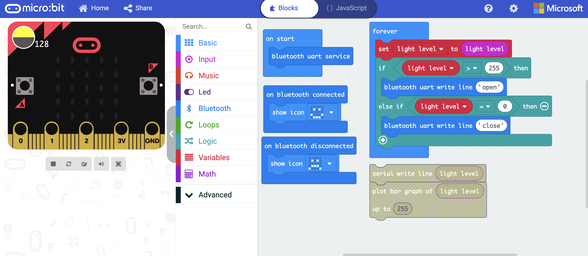

This week we created our state transitions as seen above where the motion of flipping the book open would allow the sound to be played and when the book is closed the sound would stop.
Using the light sensor, we tried to use it in the book to see how effective the light could be detected in the book since it was an important factor to consider.
We tried finding another method which is the bluetooth but it was not successful as we found out that light cannot be transmitted via bluetooth and the whole system did not work as a whole